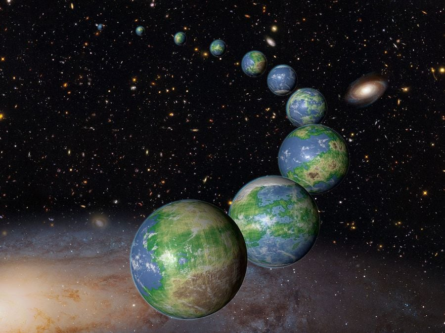
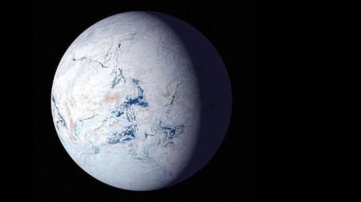

심우주 탐사도 하고, 전파망원경으로 조사도 맨날 하는데
외계인은 커녕 외계 생명체의 흔적조차 찾을 수가 없다.
문명을 이룬 생명체가 있었다면 전파를 포함해 어떤 방식으로든 우리가 인식할 수 있는 흔적을 남길 텐데,
정말 우리는 우주에 홀로 있는 것일까?

2015년에 NASA가 제기한 가설은
"우리가 최초의 생명체" 라는 것이다 (완전 최초는 아니더라도 초창기)
우주의 나이는 138억 년인데,
생명체에게 에너지를 제공할 만한 항성은 100조년까지 남아있을 예정이며,
여러 조건을 추가해 태양과 비슷한 항성으로 좁히더라도, 아직 1,000억 년의 시간이 남아있다.
즉, 외계생명체는 아직 태어나지 못했고, 우리가 바로 '외계 초고대문명'이 된다는 것이다.
하지만 요즘은 위와 반대되는 가설이 지지를 얻고 있다
외계 생명체는 우주 생성 초기에 존재했으나 모두 없어졌고,
우리가 우주의 마지막 생명체, 늦둥이라는 것이다.
초창기의 우주는 밝고 따뜻한 곳이었다. 우주배경복사의 온도는 섭씨 20도 정도로 생명체가 살기 최적이었으나,
지금은 우주배경복사가 초기에 비해 2.7K(-270도)로 차갑게 식어버려서 액체 상태의 물이 존재하기 어렵고
오히려 120억 년 정도 전쯤이 온 우주에 생명체가 태동하던 전성기였다는 것.

현재 우주는 전성기에 비하면 춥고 어두운 곳이며, 선배 생명체들은 모두 사라져 흔적조차 남지 않은 것이다.
실제로 미국 천문학회 저널에 실린 논문에 따르면,
외계인이 1천 만년 이전에 지구를 방문했다면 그 흔적을 찾기가 불가능할 것이라고 한다.
하물며 몇십 억년 전 문명의 흔적은 현재의 우리가 찾을 수 없다.
어찌됐든 가설이라고는 했지만 전자든 후자든 외계 문어 하나만 딱 나오면 둘다 폐기된다
그거 하나를 못 찾아서 그렇지.
오늘도 수많은 외붕이들이 외계 생명체의 발견만을 애타게 기다리고 있다.
드레이크방정식